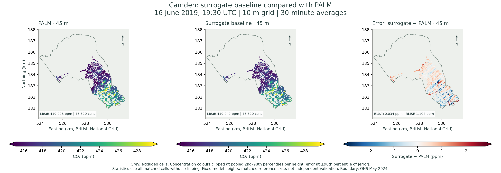
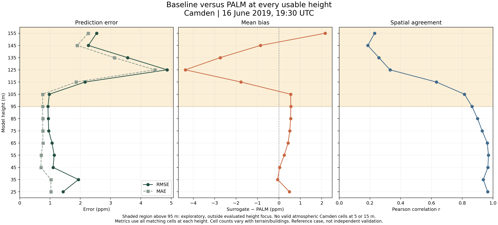

Camden CO₂ PALM comparison
16 June 2019, 19:30 UTC · PALM 30-minute averages · 10 m nested grid
PALM is an atmospheric model that uses large-eddy simulation to represent the larger turbulent motions in the air. In cities, it can simulate how buildings shape wind and how turbulent air transports gases such as CO₂. Maronga et al. (2020)
Compare the baseline surrogate’s CO₂ concentrations with the PALM simulation at matching model heights. The maps and statistics cover valid atmospheric cells within Camden.
How to read this comparison. Error is surrogate minus PALM. Positive values indicate overprediction. Heights above 95 m are exploratory. This reference case includes training patches, so the results describe agreement for this case. Independent validation requires a held-out case.
Compare one height


Results by height
| Model height | Cells | PALM mean (ppm) | Surrogate mean (ppm) | Bias (ppm) | MAE (ppm) | RMSE (ppm) | Pearson r |
|---|---|---|---|---|---|---|---|
| 5 m | 0 | No valid atmospheric cells inside Camden | |||||
| 15 m | 0 | No valid atmospheric cells inside Camden | |||||
| 25 m | 323 | 422.514 | 423.007 | 0.493 | 1.032 | 1.432 | 0.966 |
| 35 m | 15,765 | 422.021 | 421.960 | -0.060 | 1.032 | 1.940 | 0.937 |
| 45 m | 46,820 | 419.208 | 419.242 | 0.034 | 0.703 | 1.104 | 0.967 |
| 55 m | 82,169 | 417.706 | 417.957 | 0.251 | 0.710 | 1.139 | 0.971 |
| 65 m | 116,885 | 416.819 | 417.248 | 0.429 | 0.767 | 1.068 | 0.963 |
| 75 m | 142,877 | 416.154 | 416.665 | 0.512 | 0.762 | 0.959 | 0.930 |
| 85 m | 159,041 | 415.640 | 416.189 | 0.548 | 0.762 | 0.943 | 0.900 |
| 95 m | 172,367 | 415.258 | 415.816 | 0.558 | 0.756 | 0.934 | 0.863 |
| 105 m · exploratory | 184,977 | 414.958 | 415.507 | 0.548 | 0.759 | 0.979 | 0.815 |
| 115 m · exploratory | 196,148 | 414.722 | 412.950 | -1.772 | 1.860 | 2.160 | 0.632 |
| 125 m · exploratory | 206,251 | 414.521 | 410.152 | -4.369 | 4.467 | 4.870 | 0.331 |
| 135 m · exploratory | 212,849 | 414.365 | 411.622 | -2.744 | 3.124 | 3.566 | 0.259 |
| 145 m · exploratory | 217,894 | 414.233 | 413.372 | -0.861 | 1.899 | 2.269 | 0.186 |
| 155 m · exploratory | 218,506 | 414.122 | 416.287 | 2.165 | 2.260 | 2.540 | 0.231 |
How agreement changes with height

Comparison method
The PALM and surrogate fields share a grid and time, so the comparison matches cells directly. Model heights are fixed vertical coordinates. The distance above local ground varies with terrain.
MAE is mean absolute error, RMSE is root mean square error, and Pearson r measures spatial correlation. The Camden boundary is from the Office for National Statistics, May 2024.
PALM reference
Maronga, B., et al. (2020). Overview of the PALM model system 6.0. Geoscientific Model Development, 13, 1335–1372. doi:10.5194/gmd-13-1335-2020